|

STAR TREK II:
THE WRATH OF KHAN
1982
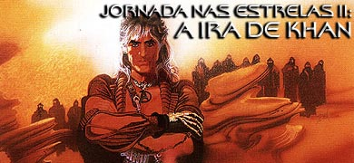
|

Sinopse
comentada
Comentários
Citações
Efeitos
Especiais
Trilha Sonora
Trivia
Ficha
Técnica
O
DVD
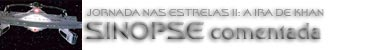
Data Estelar: 8130.3.
Ponte da USS Enterprise em missão de treinamento a Gama Hydra, próximo à zona neutra Klingon. Temos velhos conhecidos em seus postos de costume, Spock, Sulu, Uhura, Scott presumidamente na engenharia ao alcance do intercom e McCoy a tudo observando de perto. Curiosamente, na cadeira de comando vemos uma jovem tenente Vulcana e muitas outras faces jovens ocupando os demais postos. Um cargueiro de nome Kobayashi Maru pede ajuda humanitária no interior da Zona Neutra. A "capitã" hesita por um momento e ordena um curso de interceptação. Ao entrar na zona neutra o SOS cessa imediatamente e três cruzadores Klingons atacam de forma devastadora a Enterprise deixando-a à deriva e com grande parte da tripulação da ponte morta (incluindo Spock e cia.). Assim que Saavik ordena o tradicional "abandonar a nave" o almirante Kirk ordena que as portas sejam abertas (!).
Sem muita surpresa, aquela "Enterprise" se revela um simulador de ponte na Academia da Frota Estelar, sendo o capitão Spock o instrutor (e o almirante Kirk o seu supervisor imediato) daquele bando de cadetes e recém-formados. Enquanto seus colegas partem para sala de reunião, Saavik permanece "a bordo". Visivelmente aborrecida pelo seu fracasso no "Teste do Kobayashi Maru" (famoso na Academia por destruir simuladores
-- tendo sido apenas resolvido por Kirk, que tentou por três vezes até conseguir, em seus tempos de estudante), Saavik discute a validade do teste, uma vez que não havia possibilidade de vitória. Kirk diz que uma situação "de não-vitória" é algo para
a qual todo oficial comandante deve estar preparado. A Vulcana fica intrigada com tal idéia e admite que tal pensamento nunca lhe ocorreu.
Em seguida Kirk encontra Spock a sós e o Vulcano diz que está indo para a real Enterprise (NCC 1701 -- agora uma nave
escolar) esperar pela inspeção do almirante. A nave irá partir em breve em uma missão de treinamento sob o seu comando. Kirk agradece pelo presente de aniversário de Spock, um livro ("A Tale Of Two Cities", de Charles Dickens) cuja primeira linha ele lê para Spock. Avisa ao amigo que está indo para casa. Spock percebe o desânimo de Kirk.
McCoy visita Kirk, levando consigo uma garrafa de cerveja Romulana ("para fins estritamente medicinais", segundo o médico) e um par de óculos de presente para o amigo cinquentão
(McCoy normalmente receitaria Retinax V, mas Kirk é alérgico a tal produto). O bom doutor insiste que o serviço em terra está acabando com o amigo e que ele está tratando o aniversário como um enterro. Diz que Kirk deve recuperar o seu comando antes que ele realmente fique velho e passe a fazer parte de sua própria coleção de antiguidades.
Sulu, apesar de estar participando do treinamento, parece ter que assumir alguma outra função em três semanas e Chekov conseguiu uma boa posição em outro lugar. Os demais, exceto Kirk, se mostram bem ajustados as suas posições de ensino. Em seu aniversário, Kirk parece duvidar das decisões do seu passado (duas
dessas decisões viriam a assombrá-lo logo em seguida -- deixando tudo ainda pior) e das possibilidades de fazer uma vida melhor para ele no futuro (aparentemente não conseguindo enxergar mais do que um dia de cada vez e mesmo assim da maneira mais mecânica possível).
É feita a primeira menção à morte de Spock (como uma mera brincadeira). É introduzido o tema de sacrifício por um amigo, através do presente de Spock a Kirk. Também é introduzido o tema de lidar com uma grande perda, simbolizado pelo teste do Kobayashi Maru. A atividade de ensino mostra que o tempo está passando para os nossos heróis, além de enfatizar um caráter de continuidade. De que sempre teremos novas tripulações. Saavik se apresenta como uma potencial substituta de Spock, curiosa pela admiração deste por Kirk.
A cena de Kirk com McCoy é a primeira das grandes cenas do filme, mostra claramente que o tempo está passando para Kirk e ele não está sabendo lidar com isto. E o mais importante, por mais amigo que McCoy seja de Kirk e por mais certo que seja tudo que ele disse sobre a situação de Kirk, a conversa não tem efeito algum sobre o almirante. Algo totalmente fiel à vida, as verdadeiras mudanças surgem de dentro para fora, normalmente provocadas por situações que escapam completamente ao controle e mesmo
à capacidade de previsão do indivíduo.
Agora vemos, bem longe da Terra, a nave estelar Reliant (NCC 1864) sob o comando do capitão Clark Terrell e que tem o nosso conhecido
russo Pavel Chekov como primeiro oficial. Sua missão é de encontrar um corpo celeste adequado ao teste do "dispositivo Genesis", um secreto e revolucionário projeto de pesquisa comandado pela doutora Carol Marcus. Em uma comunicação subespacial (de sua base na estação de pesquisa Regula I) ela insiste que não pode haver um micróbio sequer no corpo de teste do experimento. Carol foi um caso de Kirk no passado, algo que acabou gerando um filho, David. Na realidade, doutor David Marcus, também um membro importante da equipe do projeto. O rapaz fica nervoso sempre que tem
de lidar com a Frota Estelar (ele teme que "Genesis" possa ser facilmente utilizado como uma arma terrível). Chekov e Terrell decidem fazer a coisa certa e se transportar à superfície do planeta para checar se de fato não existe nada vivo no desolado planeta de Ceti
Alfa VI.
Os dois oficiais acabam encontrando o que parecem ser os destroços de uma
nave. O interior dos seus compartimentos está vazio, mas mostra recente habitação. Quando Chekov reconhece o nome "Botany Bay" na mobília ele insiste com seu capitão que eles devem fugir rapidamente. Mas já é tarde, pois eles são facilmente capturados pelos sobreviventes. Para espanto de Chekov o seu líder se revela como sendo Khan. O tirano explica que seis meses após Kirk e cia. os terem exilado em Ceti
Alfa V, o sexto planeta do sistema explodiu levando o então belo planeta em que eles estavam ao deserto sem vida de agora. Khan quer se vingar de Kirk pela morte de vários dos seus homens (incluindo a sua amada esposa) e pelo virtual inferno que ele teve
de enfrentar por quinze anos por causa do agora almirante.
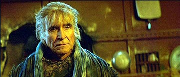
Uma vez que os dois se negavam a dizer o que estavam fazendo ali, o tirano geneticamente engendrado infecta os oficiais com as larvas da única forma de vida remanescente do inóspito habitat do planeta. Elas entram pelas orelhas e afetam o cérebro. Levando
à susceptibilidade à sugestão, loucura e morte.
Definitivamente esta é a seqüência que contém os maiores erros e problemas de lógica de todo o filme. É muita citada pelos fãs a impossibilidade de Chekov conhecer Khan (pois ele ainda não fazia parte da tripulação da Enterprise em
"Space Seed"), mas isto não chega nem a arranhar a superfície aqui. Em primeiro lugar, como os sensores da Reliant puderam não detectar todo o equipamento lá embaixo e os sinais vitais de todo aquela pessoal? De quem foi
a idéia imbecil de enviar o primeiro-oficial e o capitão para reconhecer a possibilidade de um experimento científico, especialmente em um planeta com uma atmosfera tão inóspita? Por que os dois não se transportaram de volta
à Reliant assim que perceberam o perigo? Como Khan conseguiu tomar a nave em seguida? Talvez Bennett e Meyer estivessem pensando que para honrar totalmente o espírito da
Série Clássica precisariam utilizar alguns dos seus mais infames clichês.
Desde quando um planeta simplesmente explode? Como a Reliant não detectou os fragmentos de tal "explosão" e como a sua tripulação errou na contagem dos planetas? E o mais incrível é que a Reliant estaria realizando uma "minuciosa missão de pesquisa" e que Chekov (segundo o roteiro) já teria visitado tal sistema antes. Possivelmente David Marcus tinha razão sobre a Frota Estelar afinal (ao menos sobre a sua incompetência).
Como Khan e cia. sobreviveram naquele planeta por tanto tempo? Como os homens de Khan podem ser tão jovens? Onde Khan comprou tintura de cabelo? Isto sem falar que os efeitos visuais utilizados para simular uma tempestade de areia e a "Orelha gigante de Chekov" (TM) são difíceis de engolir. Felizmente tais defeitos não ferem mortalmente o filme uma vez que não são "remexidos" posteriormente na película e a introdução de Khan (especialmente da sua já mais do que infame "Ira"
-- aqui demonstrada com a utilização das larvas em Chekov e Terell) faz com que "os fins justifiquem os meios", ao menos neste caso.
De volta à Terra, Kirk (juntamente com Sulu, McCoy e Uhura) chega à Enterprise, em uma doca orbital, para inspeção. Na
engenharia, encontra um jovem estagiário particularmente orgulhoso do seu trabalho, Peter Preston, que é sobrinho de Scott. Kirk diz que basta de inspeção e ordena ao eterno "fazedor de milagres" que prepare a partida. Na ponte, o almirante tem um "leve mal
estar" ao ver Saavik comandar a sua primeira partida de verdade fora do simulador.
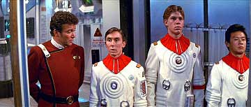
A bordo da Reliant, agora comandada por Khan e cia. com a ajuda de Terrell e Chekov (o resto da tripulação original ficou em Ceti
Alfa V). O russo comunica a doutora Marcus em Regula I que por ordem da Frota Estelar
(vinda do próprio almirante Kirk) todo o material do projeto "Genesis" deve ser transferido para a Reliant assim que eles chegarem. A cientista rejeita tal imposição, mas Chekov desliga antes que ela possa falar algo mais.
Saavik continua curiosa sobre o cenário do Kobayashi Maru e Kirk, obviamente, não lhe dá nenhuma resposta direta (além de dizer que ele é um teste de caráter -- não existe uma solução propriamente dita). Carol Marcus tenta contatar Kirk, mas a transmissão sofre interferência na fonte (cortesia de Khan). Kirk somente consegue entender que alguém estava tirando o projeto "Genesis" das mãos dela. Preocupado, ele contata o comando da Frota Estelar e recebe ordens para investigar. Ele explica a situação a Spock e pede que o Vulcano o leve até Regula I. Spock insiste que Kirk (o oficial com maior patente a bordo) deve assumir a nave e reafirma a sua eterna amizade e lealdade a Kirk. O almirante assume o comando. Enquanto isto a doutora Marcus decide fazer os seus próprios preparativos para a chegada da Reliant.
É interessante que Khan faz parecer que a Reliant está muito mais longe de Regula I do que na realidade está (senão não poderia produzir a interferência subespacial). Será que Carol Marcus contatou o comando da Frota em primeiro lugar? Se ela contatou, por que não avisou do ocorrido? Se ela não contatou, como sabia que Kirk estava a bordo da Enterprise? Kirk estaria de fato na cadeia de comando que poderia dar uma ordem direta sobre o projeto "Genesis"?
(Não que ele pudesse dar ordem alguma, já que o projeto é civil.) Enfatizando o caráter de continuidade do
filme, Kirk pede que os cadetes "cresçam antes do tempo". Em uma nota acessória, repare no uso anacrônico do termo "quadrante" (sem falar do eterno clichê de que: "A Enterprise é a única nave para a missão").
A cena de Kirk com Spock é inesquecível, a segunda grande cena em tela, talvez a melhor do filme e que serve como perfeito "setup" a cena da morte do Vulcano. Os motivos e atitudes de Spock são completamente lógicos e ainda assim de uma natureza tão humana. Tão nobre. Detalhes, como a meditação de Spock, o uso da mesma mortalha vestida pelo Vulcano no filme anterior e um gigantesco símbolo do IDIC na parede ajudam a enfatizar a profunda sabedoria lógica de Spock e a sua filosofia de abraçar a diversidade. Filosofia pela qual sempre viveu. Novamente, a conversa com Spock não resolve magicamente a crise de Kirk.
A Reliant parte para interceptar a Enterprise (depois de dar uma parada em Regula I
-- fato explicado melhor mais tarde), e Uhura continua tentando se comunicar com Regula I, mas ninguém responde, apesar da interferência ter desaparecido.
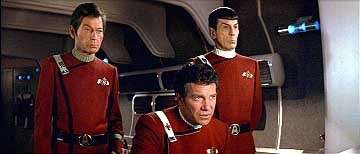
Kirk, Spock e McCoy assistem (na cabine do almirante) ao sumário do projeto "Genesis" (uma gravação feita pela doutora Marcus um ano antes, propondo o projeto à Federação). O objetivo da pesquisa é literalmente trazer vida aonde ela não existia antes. Em três escalas de desenvolvimento: laboratório, uma etapa intermediária em um meio subterrâneo sem vida (que Kirk acredita que eles já tenham alcançado) e finalmente a nível planetário (ministrando o dispositivo através de um torpedo capaz de transformar um corpo celeste completamente sem vida em um protótipo de paraíso). A imediata (e inevitável) discussão ética entre McCoy e Spock que se segue é subitamente interrompida por Saavik no intercom dizendo que a Reliant se aproxima.
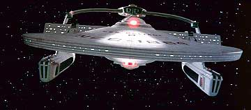
De volta à ponte da Enterprise, Saavik sugere (baseada no regulamento) que Kirk erga os escudos. O almirante aguarda, Khan saboreia o seu momento de triunfo. Ele ataca com toda a força, incapacitando a Enterprise antes que ela tenha qualquer chance para reagir. Ele finalmente se comunica com a Enterprise, Kirk fica completamente chocado. Pensando muito rápido, Kirk negocia um acordo com Khan: ele e todo o material sobre "Genesis" do computador da Enterprise, pela nave e a vida de sua tripulação. Ele consegue ganhar algum tempo, suficiente para utilizar o código de comando remoto da Reliant e forçá-la a baixar os escudos. A Enterprise ataca e avaria o suficiente a Reliant para fazê-la recuar para reparos (ela volta para Regula em uma órbita oposta à estação de pesquisa, ativando o campo de interferência, monitorando as comunicações e esperando a Enterprise -- esperando que Kirk tenha sucesso, que ele não teve, em encontrar o material do projeto "Genesis"). Scott chega à ponte com um moribundo Preston nos braços, que acaba morrendo na enfermaria. O número de feridos é bem grande na Enterprise.
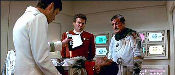
É realmente estranho que Kirk tenha demorado tanto para erguer os escudos, especialmente levando em consideração que justo a Reliant fosse a nave designada para oferecer ajuda ao Projeto "Genesis". Acaba soando meio artificial. Em contrapartida, a sua recuperação foi absolutamente genial (a primeira das três "manobras Kirk" (TM)) do filme. O tal código de ativação remoto faz todo o sentido do mundo (ver o episódio
"Unnatural Selection" da segunda temporada de A Nova Geração para
mais detalhes de tal procedimento), não parecendo algo criado apenas para tirar Kirk da encrenca. Fica apenas a questão do porquê
de Kirk não ter ordenado um travamento total do computador da Reliant (que a deixaria morta no espaço um bom tempo) e
somente que os escudos fossem abaixados.
É bastante razoável que Khan fosse pego desprevenido, uma vez que ele está tentando jogar no campo de Kirk, no comando de uma nave estelar (nem que ele tenha sido "pego de surpresa" somente para equilibrar o fato
de ele e do seu punhado de seguidores conseguirem manejar uma nave estelar inteira). Fazer uma comparação desta seqüência com aquela da "fenda espacial artificial" do filme anterior parece válida. A diferença é que aqui Kirk não é feito incompetente. E a presente seqüência (ao contrário daquela) está completamente alinhada com o arco do personagem no filme. Enferrujado? Talvez. Precisando de óculos? Talvez. Mas aqui ele começa a se recuperar do torpor que vinha tomando conta da sua vida.
Particularmente patético é o pessoal de apoio parado na ponte na hora da crise (falha clara de direção). Curioso Saavik não conhecer nada sobre o código de ativação remoto de uma nave estelar. E por que diabos Scott levou o rapaz para a ponte e não para
a enfermaria direto?
O conceito de "Genesis" se alinha de forma perfeita ao tema principal do filme: renovação, transformação e mesmo renascimento. A morte de Preston termina de acordar Kirk e mostra claramente que não foi a primeira vez que ele perdeu alguém sobre o seu comando e tal ocorrência nunca teve um efeito devastador sobre ele (ele não se mostra de forma alguma insensível, mas ele tem que sacudir a poeira e seguir em frente, isto não é de forma alguma motivo de dúvida para ele). É curioso que Saavik seja colocada tantas vezes no comando da Enterprise em detrimento de Sulu, por exemplo. A "atriz" (seja ela quem for) que faz a navegadora de Khan na ponte da Reliant recebe o troféu "Toilete de Ouro" (TM) do filme (as suas continuas "caras e bocas" constituem um "espetáculo à parte").
O roteiro garante que as naves recebam o impacto total das armas sem escudos. Por
isso não temos os efeitos dos escudos em tela, economizando mais um pouco aqui (tal aspecto será discutido nos outros filmes de
Jornada mais tarde). Isso também é utilizado de uma maneira interessante para aumentar a dramaticidade da situação. Os feisers parecem verdadeiros "mísseis luminosos" (que serviriam de inspiração para a Defiant da série
Deep Space Nine, anos depois). As "batalhas de costado" enfatizam a motivação naval do filme. A Reliant foi a primeira nave de
Jornada em tela a ter um tubo traseiro de torpedos. A Enterprise de Archer se mostrou capaz do mesmo feito antes na cronologia. Mais uma evidência que a nave do dono do Porthos talvez faça parte de uma linhagem distinta das da classe Constitution.
A Enterprise (bastante avariada e sem sensores) chega a Regula I. Kirk, McCoy e Saavik se transportam a bordo para investigar e encontram um rato (?!), os corpos da maior parte da equipe da estação (torturados até a morte por Khan, atrás de informações sobre "Genesis" --
esses cientistas serviram como "bucha de canhão" para ganhar tempo para que "Genesis" fosse retirado da estação) e Terrell e Chekov. Os dois oficiais dizem tudo que aconteceu. Kirk lembra que a segunda fase do projeto seria subterrânea. Encontrando a unidade de transporte da estação ainda ligada, ele decide usar as últimas coordenadas programadas no dispositivo, que apontam para o interior de Regula. Antes de partirem, ele se comunica com Spock e o Vulcano diz que "pelo regulamento, como gosta a tenente
Saavik, horas serão como dias!" e que a força auxiliar somente será restaurada daqui a dois dias (até lá a nave ficaria como um virtual alvo para Khan praticar a sua pontaria).
Chegando ao subterrâneo de Regula eles encontram David e Carol. Só que Kirk não contava que Terrell e Chekov ainda estivessem sobre o controle de Khan. Os dois ameaçam Kirk e os demais com feisers de mão. Khan (que estava ouvindo tudo) ordena pelo comunicador que eles matem Kirk. Terrell não cumpre e acaba cometendo suicídio, se vaporizando.
Nessa hora, a criatura que estava dentro do russo (que sobrevive) sai pela sua orelha e é morta no chão por Kirk. Khan transporta "Genesis" a bordo da Reliant e diz que não precisa mais matar Kirk, pois o destino de ser aprisionado no interior de Regula é muito pior que a morte e o tirano ainda vai destruir a Enterprise para "completar o pacote" da sua vingança.
É meio absurdo que McCoy não tenha insistido que Terrell e Chekov fossem levados imediatamente para a Enterprise para uma análise completa (não tem desculpa
de a Enterprise estar sem transportes, pois o transporte da estação estava claramente
operacional). Khan provavelmente tem algum conhecimento de hipnose, para manter a lealdade dos dois
oficiais comandantes da Reliant também. É particularmente curioso que assim que Terrell tenha sido morto, a criatura no interior de Chekov tenha saído do seu corpo. Qual é a relação?
Isso sem falar que tivemos (infelizmente) mais uma sessão de gritos de Chekov (continuação do filme anterior?). O destino de Kirk aprisionado pelo resto da vida no interior de Regula seria uma vingança perfeita para Khan. Só que para
isso funcionar ele teria que provavelmente destruir a estação Regula I e também torcer para que ninguém da Federação se lembrasse de procurar por sobreviventes na "Caverna Genesis".
A situação entre Kirk e David é claramente desconfortável, Carol pede que o filho mostre a caverna do experimento para os outros três oficiais. Kirk lamenta por ter deixado Khan livre anos atrás e pela família que poderia ter tido e não teve. Carol o leva para a caverna para tentar
animá-lo um pouco. O visual é incrível, uma verdadeira floresta tropical no interior do planeta. Saavik novamente insiste em saber como Kirk enfrentou o teste do Kobayashi Maru, talvez por temer que eles estejam agora enfrentando um real cenário "de não-vitória" como a situação do teste. Kirk admite que modificou a simulação para que pudesse passar no teste, ele trapaceou. Saavik diz que então ele nunca enfrentou uma "situação de não-vitória". O almirante diz que não acredita em tal coisa e saca
o comunicador, dizendo a Spock que já se passaram duas horas, para surpresa de todos.
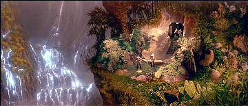
-A cena entre Kirk e Carol Marcus é outra grande cena do
filme. Muito bem atuada por Shatner, captura de forma perfeita toda a falta de esperança do seu personagem. A segunda "Manobra Kirk" (TM) em tela é ainda melhor que a primeira, jogando com a audiência tanto quanto com Khan. A "ponta" de arrogância que brota de Kirk é um "setup" perfeito para o final do filme e também é interessante como a recuperação de sua confiança no comando faz aflorar tais traços de caráter (lembrando muito da experiência dele em
"The Enemy Within" da Série Clássica). É interessante notar também como ele se agarra
à sua recuperada confiança em sua habilidade de comando como uma espécie de último refúgio, e mesmo este acabaria por se esfacelar.
Os cinco do grupo são transportados a bordo da Enterprise. Saavik fica surpresa ao descobrir que o que Spock falou ("horas serão como dias") era simplesmente um código para enganar Khan (Spock garante que não mentiu, apenas "exagerou"). As duas naves agora orbitam Regula, em órbitas opostas. Spock sugere que a Enterprise entre na nebulosa Mutara, que nivelará as condições com a Reliant (claramente em melhor situação operacional que a Enterprise). Dentro da nebulosa, os escudos e demais sistemas táticos (incluindo o visual) serão inúteis. Kirk consegue manipular Khan (apelando para o seu gigantesco ego) para que a Reliant siga a Enterprise.
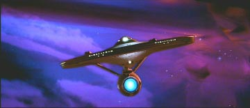
A caminho da ponte da Enterprise, via os tubos de acesso, temos talvez a fala mais engraçada do filme (devido ao contexto). Kirk diz que David é o seu filho ao que Spock retruca: "Fascinante".
As duas naves iniciam um padrão de busca no interior da nebulosa e procuram, às cegas, uma melhor posição de tiro. David vem para a ponte da Enterprise. Uma primeira troca de fogo avaria ainda mais as duas naves. Chekov (recuperado) se apresenta para o serviço e assume o posto das armas. Spock sugere que Khan se mantém em um único plano de busca. Kirk ordena um deslocamento ortogonal a este plano, quando Khan volta para a última posição de combate, a Enterprise reaparece com ótima posição de tiro. Chekov utiliza os torpedos fotônicos e deixa a Reliant
abatida e à deriva.
A "batalha na nebulosa Mutara" (TM) é uma favorita entre os fãs. A majestade com que as naves se movem, a fiel analogia com o combate entre dois submarinos e a precisa trilha sonora formam uma seqüência de fato inesquecível. Reparem que o lançador esquerdo de torpedos da Enterprise é avariado e que apenas o lançador direito é usado no final. O fato de Chekov ser um oficial de armas experiente faz toda a diferença e dá uma chance ao
russo para "acertar as contas" com Khan.
Khan não desiste e ativa a detonação do torpedo "Genesis" e gasta o seu ultimo suspiro para amaldiçoar Kirk. Eles têm quatro minutos para a detonação, que não pode ser interrompida, a Enterprise parte em velocidade de impulso. Spock desce até a
engenharia para tentar restaurar a velocidade de dobra. McCoy não deixa Spock entrar em um compartimento-chave para efetuar os reparos, devido à radiação. Spock usa o toque Vulcano e deixa McCoy inconsciente e faz um breve elo telepático com o médico, em
que diz apenas: "lembre-se". Ele entra no tal compartimento e, apesar de receber doses mortais de radiação, consegue restaurar a dobra espacial bem a tempo. A Enterprise escapa.
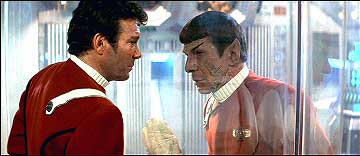
Nunca fica claro em que equipamento Spock realizou os reparos e qual foi
a natureza dos mesmos. É estranho que no universo de Jornada não existam robôs que possam ser utilizados para realizar tais consertos, nem mesmo um manipulador mecânico para ser utilizado pela equipe de
engenheiros.
Carol Marcus chega à ponte e observa o efeito "Genesis" modificar a matéria da nebulosa e criar um planeta inteiro. Kirk é chamado
à engenharia, olha para o assento vazio de Spock e teme pelo pior. Ele corre e vê Spock quase morto, atrás da parede transparente do compartimento em que ele fez os reparos. O Vulcano pergunta se a nave está fora de perigo e morre, após desejar uma vida longa e próspera ao amigo. Kirk fica completamente arrasado.
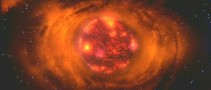
Pode-se perceber a relativamente grande densidade de matéria da nebulosa quando as duas naves "dão um tranco" ao entrar em seu interior.
É particularmente belo que durante a caminhada de Kirk até a engenharia o "planeta Genesis"
vá se formando (ou "nascendo"), ao mesmo tempo em que a vida de Spock vai se
esvaindo, estabelecendo uma ligação entre o personagem e o tal planeta, algo que seria aproveitado no filme seguinte.
O tema de um personagem se sacrificando pelo bem comum (especialmente em um ambiente militar) é mais antigo que a própria ficção científica. O mais importante a ser considerado aqui é que a morte de Spock foi a primeira morte de um personagem regular em
Jornada, sem contar que este personagem em particular era o mais popular e emblemático de todo o elenco. Considerando o "tradicional clichê" de
Jornada até então de matar um oficial de segurança por episódio, tal morte foi um verdadeiro choque para muitos. Tais fatores tornaram a morte de Spock
um acontecimento muito especial e marcante. Sábios foram os futuros realizadores de
Jornada que entenderam corretamente o ocorrido e não tentaram igualar tal feito. Lembrando da cena da morte em si, a parede transparente foi uma ótima idéia.
Shatner atua como pode, mas é Nimoy quem faz a cena funcionar com Spock (ao se levantar e ajeitar o uniforme em uma última nota de dignidade, ao chocar a cabeça na parede do compartimento e na sua queda após o seu último suspiro -- bastante sensível mesmo). O que de fato é tocante (mais do que a morte em si) é saber que Spock morreu exatamente pelos mesmos princípios com que viveu. Mantendo vivo o tema de que "a maneira com que enfrentamos a morte é tão importante quanto como enfrentamos a vida".
O corpo de Spock é encerrado em um torpedo e devolvido ao espaço. Kirk faz a eulogia ao amigo perdido. Mais tarde, David vai ver Kirk em sua cabine. Kirk admite ao seu filho que nunca enfrentou realmente a morte, não deste jeito. David, tendo observado toda a situação e a postura de todos os envolvidos, admite ter se enganado a respeito de Kirk e que tem orgulho em tê-lo como pai. Os dois se abraçam. De volta a ponte, todos contemplam na tela o planeta
Genesis, lembrando de Spock. Kirk finalmente entende o significado do presente de Spock em seu aniversário e recita o final do livro. Kirk diz que um dia deve voltar a aquele lugar e que "sempre existem possibilidades", como diria o seu amigo Vulcano. E também diz se sentir jovem.
A cena do enterro em si parece um pouco excessiva, tanto pela atuação de Shatner, quanto pelo tema musical tocado na gaita de foles. A versão orquestrada que se segue de tal tema é definitivamente infeliz, sendo talvez a maior derrapada musical do filme. O texto da eulogia de Kirk parece meio confuso também. De toda forma, seguindo a idéia central do roteiro de analisar a crise de meia idade de Kirk, o almirante chega ao fundo do poço com a morte de Spock. Sua lendária habilidade de comando foi incapaz de salvar a Enterprise, o que não teria sido possível se não fosse pelo sacrifício do seu melhor amigo (sua parte mais nobre).
Em sua hora mais sombria, Kirk recebe a redenção com a visita do seu filho David. Ao devolver a Kirk o conselho de Kirk a Saavik (devemos assumir que se deu alguma conversa fora de tela entre David e Saavik), David devolve a esperança ao seu
pai, que finalmente entende e aceita todos os recentes acontecimentos como inegáveis fatos da vida (escolhidos e ordenados de forma espetacular pelo roteiro de Meyer). A fala de David de que são das palavras que surgem as idéias é particularmente feliz, devido ao imenso número de referências literárias do filme. Shatner se sai bem na cena, apesar de Merritt Butrick (como David) não ajudar em nada.
A cena final na ponte também é muito bonita, mas parece excessiva no sentido de oferecer garantias demais
de que Spock estaria nos filmes seguintes. Isso não era necessário. Seria mais satisfatório artisticamente se o final ficasse no limite das possibilidades, aqui ele entrou no terreno das certezas, o que não foi uma boa opção.
Vemos o "caixão fotônico" de Spock caprichosamente intacto na superfície do planeta
Genesis e a voz do Vulcano em um famoso monólogo, garantindo que ainda voltaríamos a ouvir falar dele de novo.
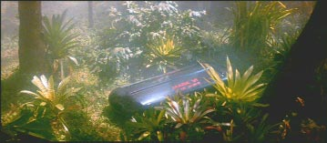
Tal "certeza" continua nestas duas últimas cenas (largamente amplificada), de novo enfraquecendo o sentimento da perda de Spock. O que (de novo) não era necessário. Um final (por exemplo) com o caixão de Spock rumando para a estrela próxima e o texto do prólogo como narrativa seria mais forte e ainda assim ambíguo o suficiente (juntamente com o "lembre-se" anterior) para permitir um eventual retorno de Spock de alguma forma. Faltou também algum fechamento com Saavik.